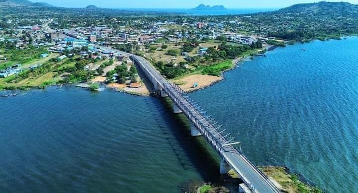
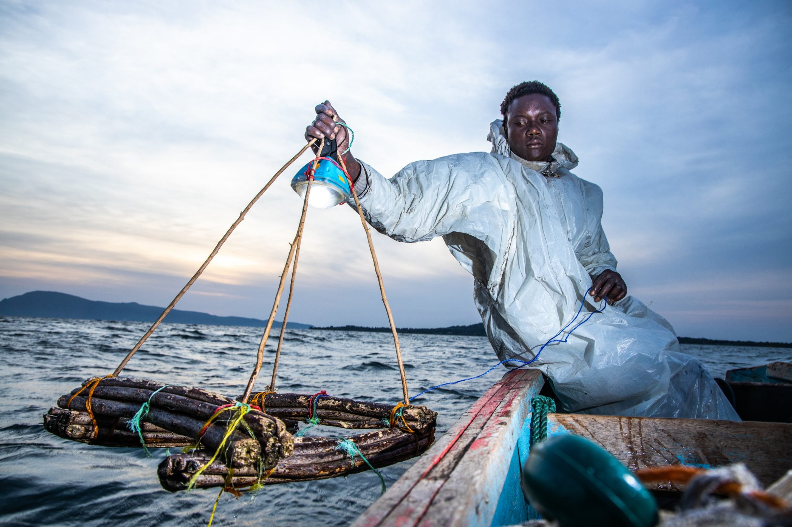
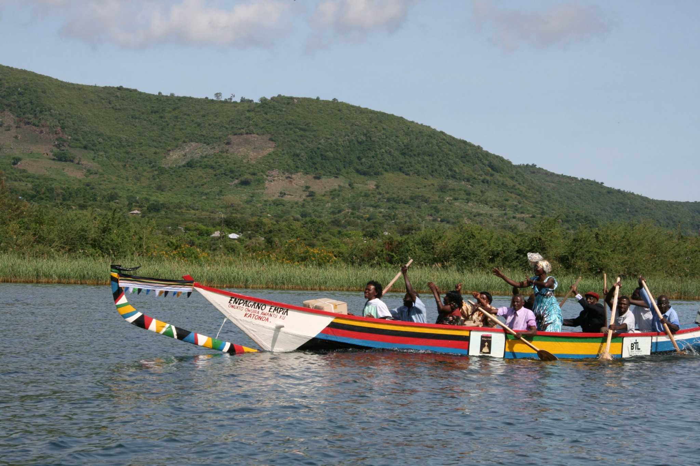
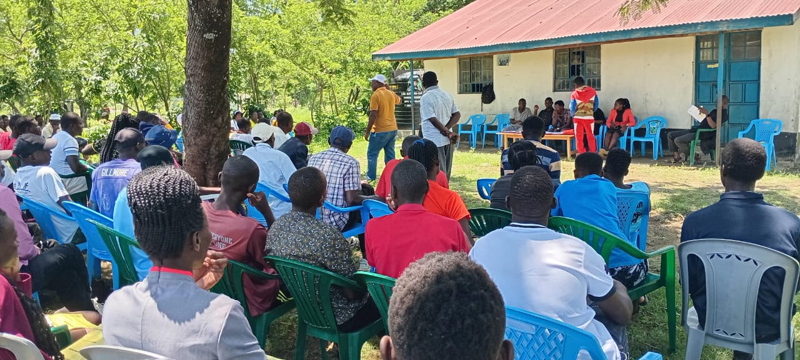
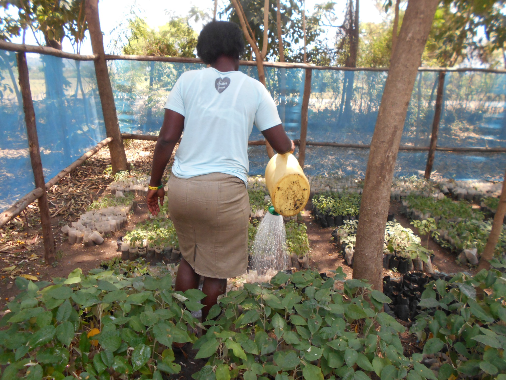
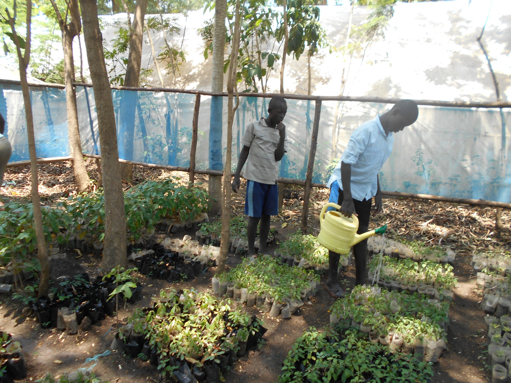
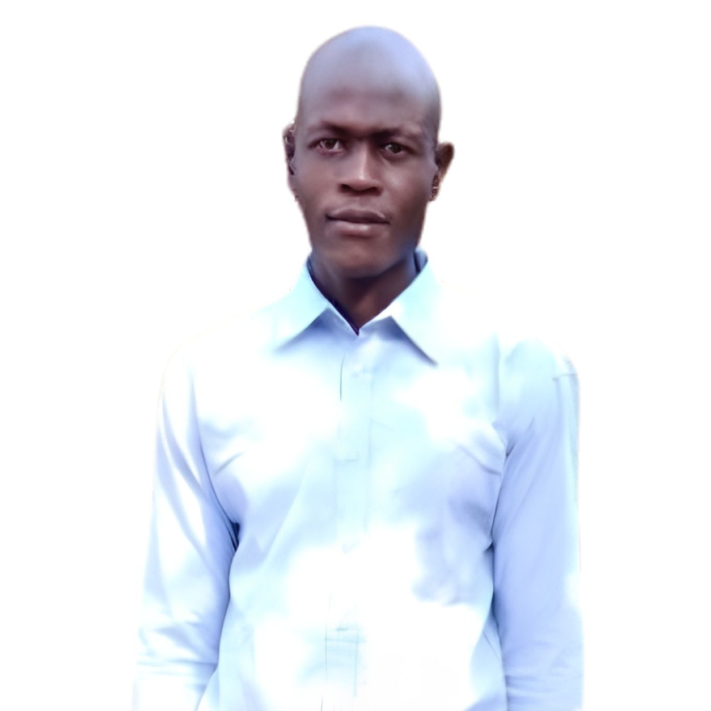

The lake is central to local life, livelihoods and the wider environment.
About KWEPU
KWEPU was established in 2019 in Rusinga, Homa Bay County, Kenya. We work with communities and schools to protect the environment, restore landscapes and promote sustainable livelihoods.
Our Home
Discover Rusinga Island — Home of KWEPU
Understanding Rusinga helps visitors understand why environmental protection, food security and resilient livelihoods are at the heart of KWEPU's work.
KENYACountry
HOMA BAYCounty
RUSINGAIsland
Simplified location illustration for orientation — not a navigation map.
An island community shaped by Lake Victoria
KWEPU works on Rusinga Island in Homa Bay County, western Kenya. The island lies within Lake Victoria and its communities are closely connected to the lake, the land and local natural resources.
Fishing and farming are important local livelihoods. Rusinga's hills, lakeshore communities and cultivated areas form the living landscape in which KWEPU's programmes operate.
Lake VictoriaWater, food systems and livelihoods are closely connected to the lake.
Fishing & FarmingLocal livelihoods make sustainable resource use especially important.
Island LandscapeHills, settlements and cultivated land create opportunities for restoration.
Community ConnectionWomen, young people, schools and households are central to KWEPU's approach.




KWEPU in Action
Local people caring for the environment
Our work is rooted in practical participation. KWEPU members, young people and community participants help care for seedlings, learn together and turn environmental knowledge into action.


Local livelihoods depend on healthy natural resources and resilient food systems.
Hills, lakeshore landscapes and cultivated areas create opportunities for restoration.
Women, young people, schools and households are at the heart of KWEPU's work.
Partnerships can strengthen environmental action, livelihoods and community resilience.
A healthier environment. Stronger communities. A brighter future for Rusinga.
Our Vision & Goals
Building a greener, sustainable and more resilient future through community-led environmental action.
Our Vision
To build greener, resilient and sustainable communities where people, especially women and young people, actively protect the environment, strengthen sustainable livelihoods and create lasting social and environmental impact.
Environmental Conservation & Restoration
Promote tree production, tree planting, ecosystem restoration, nature conservation and practical climate action.
Sustainable Agriculture & Food Security
Advance agroforestry, kitchen gardens, sustainable agriculture and environmentally responsible food production.
Environmental Education
Strengthen environmental and climate-change education in schools and communities through practical learning and awareness programmes.
Youth, Women & Community Empowerment
Engage women, young people, schools and community groups in environmental leadership, skills development and sustainable livelihoods.
Community Capacity Building
Equip communities with practical knowledge and skills that support long-term environmental stewardship and resilient livelihoods.
Partnerships & Volunteer Exchange
Build long-term local and international partnerships that encourage intercultural learning, volunteer service, knowledge exchange and community-led development.
Our approach is practical and community-led.
We believe lasting change happens when communities, schools, women,
young people, volunteers and partners work together.
Our Projects
Tree Planting
Restoring schools and community landscapes through tree planting and environmental education.
Tree Nursery
Supporting local tree production and increasing access to suitable indigenous and fruit trees.
Agroforestry
Promoting gardens and farming systems that combine food production with environmental restoration.
Schools & Communities
Working with schools and communities to create long-term environmental stewardship.
Featured Community Programmes
KWEPU connects practical knowledge with community ownership, food security, livelihoods and environmental responsibility.
Ubuntu Poultry Farming
Beginning with 15 women, a revolving-fund approach supports poultry skills, self-reliance and food security.
Read the programme story →Tailoring & Textile Skills
Women and young people develop practical garment-making skills with a vision for a well-equipped training centre.
Read the programme story →Kitchen Garden Initiative
Small household gardens strengthen food security while KWEPU seeks sustainable solutions to the challenge of water access.
Read the programme story →MAKE RUSINGA GREEN
Tree nurseries, schools and communities come together to plant, nurture and protect trees for the future.
Read the programme story →Our Impact
5,000+
Trees planted at Eddy Memorial School.
4,000+
Trees planted at Kamasengre School.
Since 2019
Community-led environmental action in Rusinga.
Our Team
Meet the people serving Kamayoge Women Environmental Protection Unit through leadership, staff support and volunteer service.
Leadership Team

Ramanus Abade
Director

Joseph Odoyo
Assistant Director

Margret Akinyi
Leader

Linet Achieng
Groups Leader

Nadia Venessa
Unit Leader

Maurice Odede
Leader
Staff
Volunteers
Volunteer & International Partnerships
KWEPU welcomes long-term partnerships with volunteer-sending organizations, including German weltwärts organizations, and international volunteers interested in environmental conservation, climate action, sustainable agriculture, schools, youth and community development.
Volunteer Opportunities
Volunteers can support tree nursery management, seedling propagation, tree planting, agroforestry, kitchen gardens, school environmental programmes, youth engagement, community outreach, project documentation and environmental awareness activities.
Accommodation & Welfare
KWEPU has secure hostel accommodation with capacity for up to 12 volunteers. We provide local orientation, community integration, project supervision, guidance on local culture and practices, and support throughout the placement.
Arrival & Travel Support
KWEPU can coordinate volunteer arrival and onward travel from Kisumu or Nairobi. Where arrival times require an overnight stay, we can assist with secure accommodation and organize affordable onward transport in consultation with the volunteer or sending organization.
Supervision & Partnership
We work with sending organizations to agree on volunteer duties, supervision, safeguarding, accommodation, working hours, emergency procedures, monitoring, evaluation and communication throughout the placement.
What We Are Looking For
We welcome volunteers and partner organizations interested in Environment • Climate Action • Agroforestry • Sustainable Agriculture • Schools • Youth • Community Development.
We especially value volunteers who are willing to learn from the local community, work respectfully with Kenyan partners and contribute to long-term community development.
Partnership Contact
Ramanus Abade
Telephone / WhatsApp:
+254 724 761 771
Email:
ramanusojwang2002@gmail.com
Joseph Odoyo
Telephone / WhatsApp:
+254 721 200 479
Email:
joseooko.o@gmail.com
Gallery
Highlights from KWEPU tree planting, environmental education, school projects and community activities.


.jpeg)

.jpeg)


.jpeg)

.jpeg)

.jpeg)

.jpeg)

.jpeg)
.jpeg)


.jpeg)


.jpeg)


.jpeg)

Support KWEPU
Your support helps KWEPU expand tree planting, environmental education, agroforestry and community restoration projects.
M-Pesa
Donate via M-Pesa
0724761771
KCB Bank
Account Number
1273002660
Contact Us
Get in touch with Kamayoge Women Environmental Protection Unit. We welcome partnerships, support and collaboration for environmental restoration.
Email:
Ramanusojwang2002@gmail.com
Joseooko.o@gmail.com
Phone:
+254 724 761 771
+254 721 200 479
Postal Address:
P.O. Box 134, Mbita